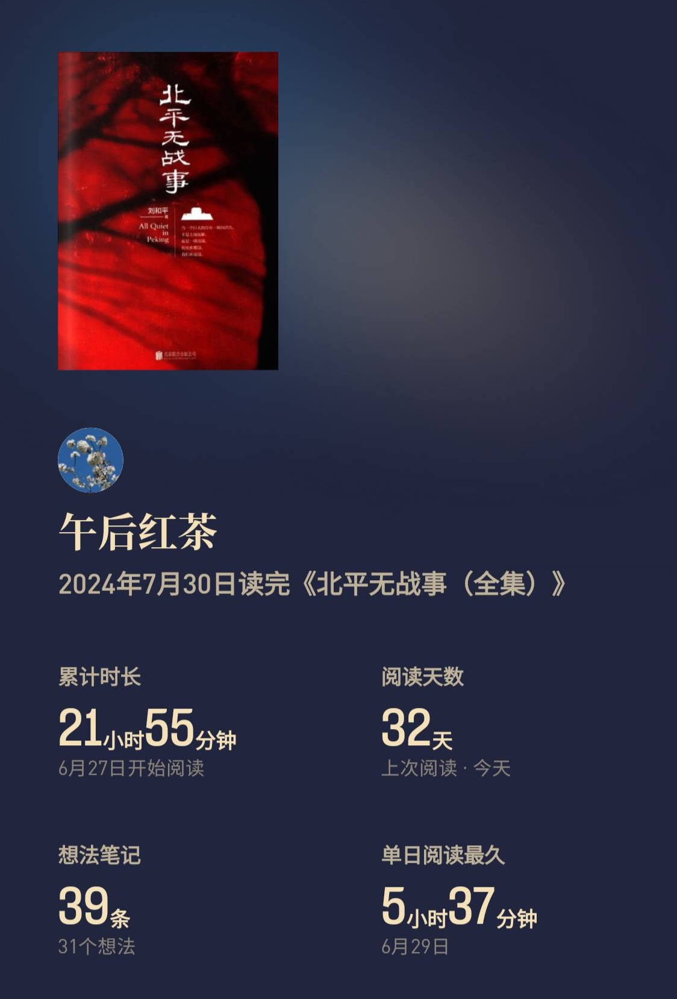

2024-07-31 浮云散，明月照人来
目录

历时一个月，我终于看完了这本书。
《北平无战事》是一部引人深思的作品。我之前看过同名电视剧，崔叔和周璇版的《花好月圆》故事令我难以忘怀。但直到这次细读，我才真正理解了这部作品想要传达的深意。
书中以1948年7月至1949年1月北平和平解放的历史进程为背景，展现了那个动荡年代人们面临的艰难选择：有人一心为国，有人在国将不国之际只想保全自己的家；有人如堂吉诃德般理想主义，有人选择做孤臣，而有人只能做孝子。
故事背景设定在国民党统治末期，当时贪腐成风，通货膨胀严重。与此同时，共产党势力不断壮大，节节胜利。在这种形势下，建丰同志于1948年成立铁血救国会，一手反腐，一手反共，希望通过货币改革、发行金圆券来扭转局面。
然而，国民党内部大多数官员都与贪腐势力沆瀣一气。要在其中找出既廉洁、又有才华、还能为建丰同志所用的人实在困难。年轻官员中，只有王莆忱、孙朝忠等少数青年才俊脱颖而出。此外还有因赏识而效忠的曾可达和梁经伦。但曾可达虽忠心耿耿，却缺乏军事功勋；梁经伦一心救国，却不顾个人安危和党派利益。
相比之下，共产党员即使身居高位也绝不贪腐。如崔中石，身为中央银行北平分行金库副主任，家中却因通货膨胀而生活拮据。林大潍是国民党空军作战部参谋，同时也是中共地下党员，虽患病多年却不在乎物质享受。谢培中失去妻子，多年清苦生活，但信念坚定不移。这种鲜明对比导致——为国的党派胜利，为己的党派失败。
在这种局势下，铁血救国会几乎无人可用，只能冒险启用立场不明的方孟敖。建丰同志自信能掌控局面，对曾可达说：“疑人也要用，只要能达到目的就好。”他想利用方孟敖的两个方面：一是利用其与父亲方步亭的矛盾关系来查账治理贪腐；二是需要他和梁经伦实施“孔雀东南飞”计划。
方步亭是这个复杂局势中的关键人物。他是哈佛大学博士，曾在美国任教，抗战后放弃优渥生活回国效力。回国后，他得到重用，成为北平分行行长。然而，因帮国民党转移财产，导致妻女遇难，与长子方孟敖关系疏远。经历种种波折后，方步亭只想保全自己的小家，将儿子们送往美国。他具有极强的判断力，对局势洞若观火。
方家成为各方势力角逐的漩涡中心。国共两党都在争夺方孟敖，这也给了贪腐派阻挠铁血救国会的借口。他们以反共为名，对抗反腐行动。
建丰同志虽然成立了铁血救国会，希望大家成为“孤臣孽子”，自己却不得不做“孝子”，这或许也反映了国民党难以挽救的根本原因——他缺乏可用之才。铁血救国会仅有的几个人也不团结。曾可达铁面无私，只想找出谁是共产党，于是方孟敖一直在被针对。他又不容忍有才能的人比他更亲近建丰先生，嫉妒梁经伦，甚至在对手面前，也不维护梁经伦，造成大错。曾可达空有忠诚，没有能力。打碎一个杯子后，他自己换个说辞，以为能蒙混过关。可是在别人看来，只会觉得建丰同志不行，因为他的手下不行。马汉三进贡曾国藩的书法之后，曾可达不能理解这是建丰同志的心头之好，不懂为什么要运往南京。一腔孤勇，只有忠心没有能力，在历史上只能是死路一条。
相比之下，国民党内的贪腐派代表人物徐铁英则手腕高明。他巧妙利用反共来对抗反腐，多次展现出高超的政治手腕。无论是陷害他人、打击对手，还是在局势变化时及时调整立场，徐铁英都表现得游刃有余。
让我印象最深的有三次：
第一次是收了崔中石的10万反手嫁祸给侯俊林，造假录音，就连在军事法庭上播放录音，也经过精心设计。这种手段之狠辣，让人不寒而栗。
第二次是杀了木兰，让方家吃了个大亏。他表示：“你们要发新货币法案，我也有的是办法反击。”这种以牙还牙的报复，显示了政治斗争的残酷无情。
第三次是直接到金库扣押谢培东。作风强硬，手腕了得。这种雷厉风行的作风，让人看到了一个老练政客的真面目。
做完这些事之后，他也能全身而退。在国共和谈期间还能恩怨一笔勾销，反而能第一时间背诵总统的指令，真是不简单。这种随风转舵，自私自利的形象，刻画得入木三分。
在这部作品中，对话的艺术同样达到了高峰。崔中石与徐铁英的对话，充满了智慧与诡谲；小妈与徐铁英的交锋，展现了女性在政治斗争中的柔弱与坚强；而徐铁英与谢培东的对峙，则让人看到了不同信仰间的冲突与碰撞。
读完《北平无战事》，我深深感受到了历史的厚重与人性的复杂。它让我重新燃起了对历史的热爱。我仿佛与那个时代的默默无名的英雄们并肩作战，感受他们的热血与牺牲。历史的车轮滚滚向前，但那些为信仰而战的人们，将永远铭记在我们心中。